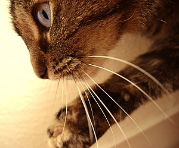

-
Поміркуйте.Котячі вуса з’єднані з тканинами, в яких багато нервових закінчень. Ці закінчення чутливі навіть до найменшого руху повітря. Як результат, коти можуть виявляти поблизькі предмети, навіть коли не бачать їх. Безумовно, у темряві це стає їм у великій пригоді.
Вуса дуже чутливі до коливань повітря, і завдяки цьому коти визначають розташування та напрямок руху здобичі. Вуса також допомагають коту визначити розмір отвору, перш ніж він спробує туди пролізти. «Те, які функції виконують вуса (вібриси), з’ясоване лише частково; однак відомо, що, коли їх обрізати, кіт тимчасово стає безпомічним»,— говориться у «Британській енциклопедії».
Вчені працюють над створенням роботів, оснащених сенсорами, котрі імітують котячі вуса. Такі сенсори, які ще називають електронними вусами, допомогли б роботам оминати перешкоди. Електронні вуса «могли б мати широке застосування у новітній робототехніці, системах взаємодії “людина-машина” та у сфері біології»,— каже Алі Джаві, науковець з Каліфорнійського університету в Берклі.
-
Як ви вважаєте?Котячі вуса — результат еволюції чи задуму?
Додаткова інформація з Вікіпедія
Система дотику представлена особливими й чутливими до дотику волосками — вібрисами. Вібриси — це довгі й місцями дуже тверді волоски, що ростуть на верхній і нижній губі (до 30 волосків), навколо очей (до 12), на вилицях (по 2) і зовнішньому боці передніх лапок (до 6). Коріння їх знаходяться глибоко в шкірі на ділянках, багатих на нервові закінчення. Вони занурені в наповнений кров'ю мішечок — синус. На стінці синуса знаходяться дотикальні тільця, які збуджуються при русі чутливих волосків. Завдяки рівномірному поширенню хвилі стискання в кров'яному мішечку (гідравлічний принцип) при одному русі чутливого волоска збуджуються нервові клітини, тому для виникнення реакції досить навіть легкого дотику. Найпомітніші вібриси на вилицях — «вуса». Це органи механічного сприйняття. Вони одержують сигнали й інформацію у вигляді найменшої вібрації потоків повітря. Кіт рухає вусами завдяки наявності коротких невеликих мускулів, розташованих біля самих коренів. За положенням вусів можна довідатися про настрій кота. Наприклад, коли він наляканий або захищається, вуса відведені назад і притиснуті до голови.
Коти не безпомічні в повній темряві й можуть пересуватися, нічого не зачіпаючи. Повітряні хвилі, що виникають при пересуванні кота, відбиваються від предметів, що розташовані поблизу. Лапами коти відчувають ледь помітні коливання підлоги, ґрунту. Волоски навколо очей в основному виконують захисну функцію.
Особливу роль у дотику відіграє й усе тіло котів. Дотикальну функцію виконують також кінчик язика, подушечки лапок.
Система рівноваги
Орган рівноваги знаходиться у внутрішньому вусі поруч із равликом. Складається з мішечків (овального й круглого) і напівкружних канальців. Заповнений рідиною (ендолімфою), а на стінках є спеціальні рецепторні клітини, що мають вигляд плям (чутливі, або рівноважні плями). Рецептори маленького мішечка збуджуються при зміні вертикального положення голови, а великого — при зміні горизонтального положення. Разом з маленькими кристалами — статолітами — вони утворюють статолітовий апарат. Переміщення кота в просторі викликає перетікання рідини в канальцях. Сигнал про переміщення надходить у головний мозок. Завдяки органу рівноваги кіт чудово орієнтується в просторі й зберігає рівновагу, коли ходить по краях дахів, парканів, по гілках дерев, по вузьких парапетах за вікном. Завдяки вестибулярному апарату кіт при падінні в польоті може змінити положення тіла й приземлитися на лапи.